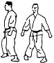

| Heisoku Dachi | Posizione naturale a piedi uniti. I piedi sono paralleli e si toccano, ginocchia rilassate. |
| Musubi Dachi | Posizione naturale con talloni uniti e punte dei piedi rivolte verso l’esterno a 45°. |
| Hachiji Dachi | Posizione a piedi divaricati, talloni alla larghezza dei fianchi e punte a 45° verso l’esterno. |
| Zenkutsu Dachi | Posizione in avanti da attacco. 60% del peso sulla gamba anteriore, 40% su quella posteriore. |
| Kokutsu Dachi | Posizione indietro da difesa. 70% del peso sulla gamba posteriore, piedi a 90° tra loro. |
| Kiba Dachi | Posizione del cavaliere. Peso equamente distribuito. Piedi paralleli o leggermente verso l’interno. |
| Neko Ashi Dachi | Posizione del gatto. 90% del peso sulla gamba posteriore, piede anteriore tocca leggermente il suolo. |
|  | Sanchin Dachi | Posizione a clessidra. Ginocchia piegate e rivolte all’interno, piedi in linea con i fianchi. |
 | Hangetsu Dachi | Posizione della mezzaluna. Via di mezzo tra Zenkutsu e Sanchin, piedi come Zenkutsu ma più vicini. |
| Sochin / Fudo Dachi | Posizione consolidata. Fusione tra Zenkutsu e Kiba. Punte dei piedi a 45°, ginocchia spinte all’esterno. |